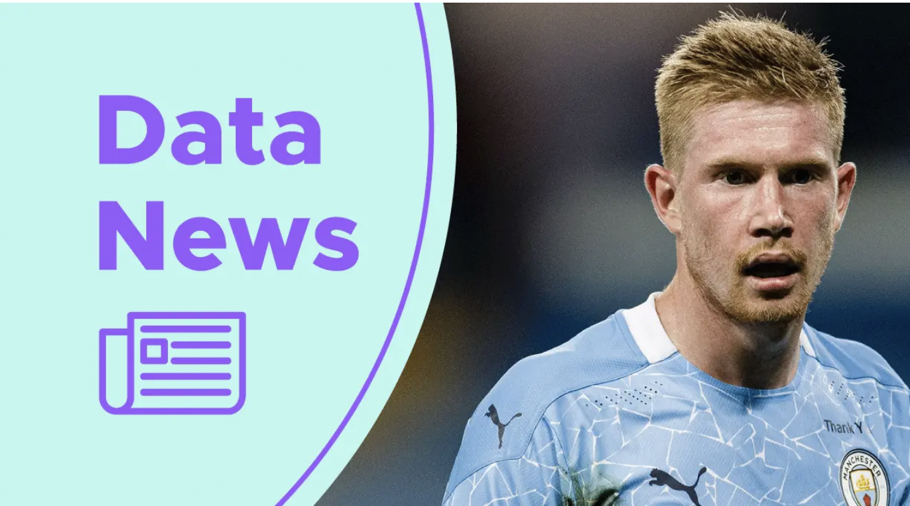
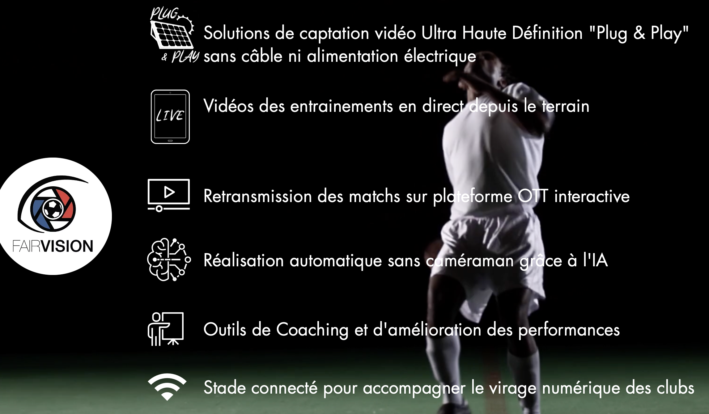
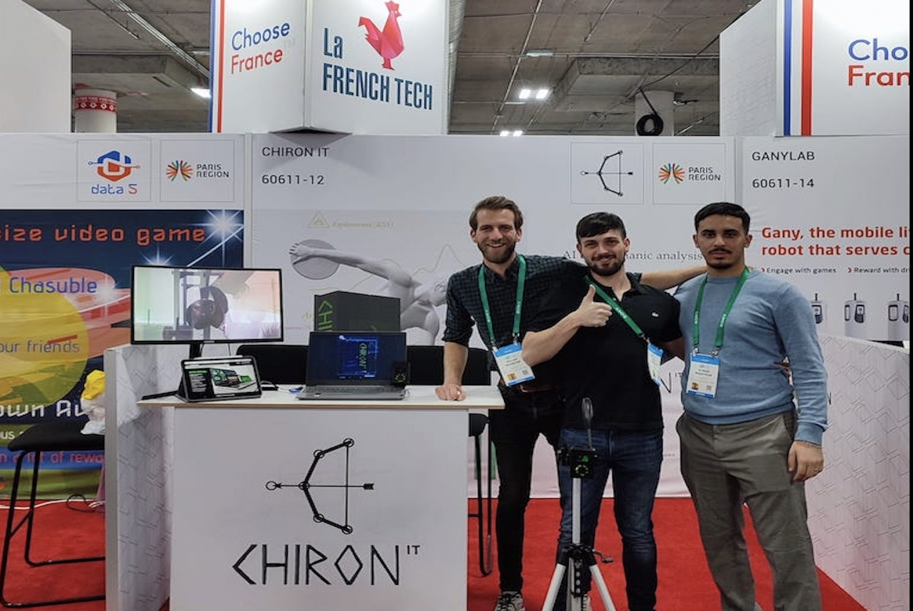
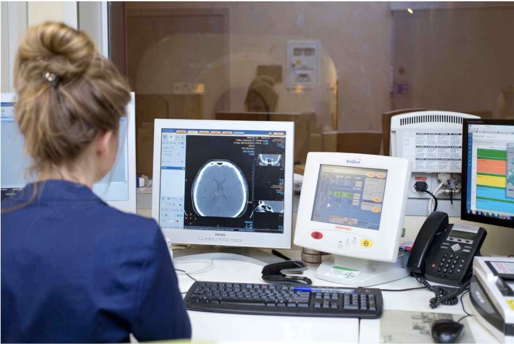
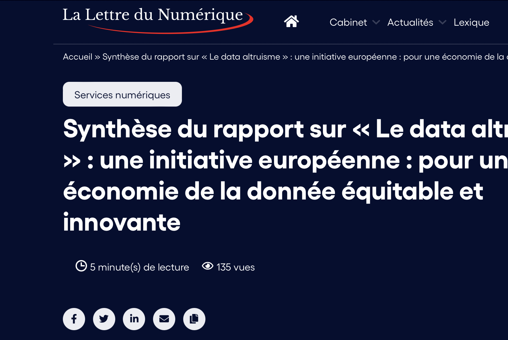
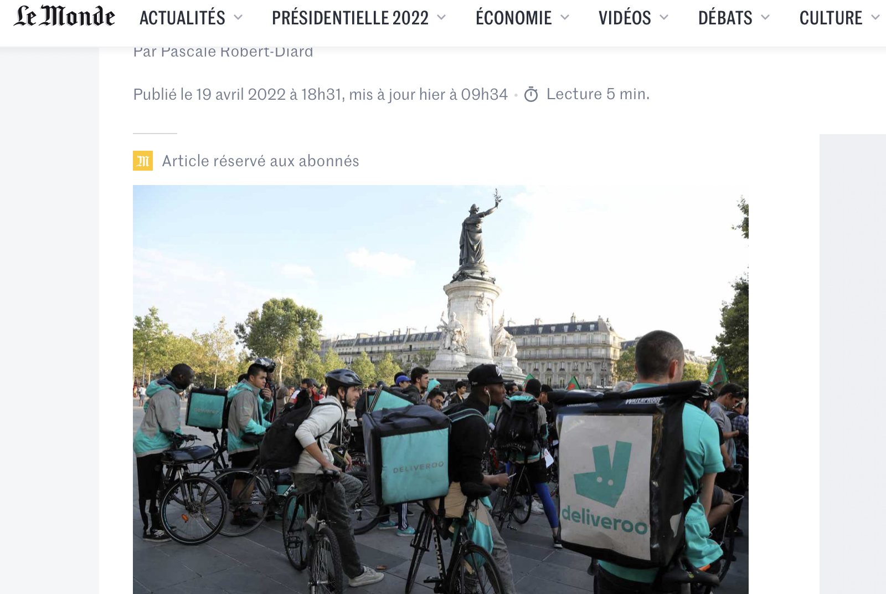

Vielle Technologique
Qu'est-ce que la veille technologique ?
La veille technologique, élément de la veille stratégique, consiste à surveiller les évolutions techniques, les innovations dans un secteur d’activité donnée.
La veille technologique comprend notamment la surveillance, la collecte, le partage et la diffusion d’information permettant d’anticiper ou de s’informer sur des changements en matière de recherche,
développement, brevet, lancement de nouveaux produits, matériaux, processus, concepts, innovation de fabrication, etc…. Cela a pour but d’évaluer l’impact sur l’environnement et l’organisation.
Les principaux outils de ma veille
J'ai effectuer ma veille technologique grace aux newsletters tel que feedlyn un agrégateur de flux RSS et Developpez.com le newletter des professionnels en informatique.
En plus des informations fournis chaque semaine/mois, j'ai quelque sites en favoris permettant de me tenir au courant des derniéres actualités
tel que Hitek.fr qui est un site internet regroupant l’actualité High Tech et Geek, ou encore Hardware.fr un site regroupant l'actualité sur les processeurs, les cartes graphiques, les cartes méres, ect..
Sujet de ma veille
Pour la veille techologique, j'ai décidé de traiter sur le sujet de l'inteligence artificielle, ma thématique est : Quelle impacte à l'inteligence artificielle sur le sport et la santé ?
Afin de répondre a cette thématique ma veille se repose sur 2 différents thémes :
Théme 1 : IA & Sport
Kevin de Bruyne : Comment s’est-il servi de la data science à son avantage ?

lien
La start up niçoise Fair Vision veut révolutionner le football amateur

lien
Théme 2 : IA & Santé
Optimiser et sécuriser l’entraînement au maximum grâce à l'IA

lien
L’intelligence artificielle révolutionne les soins de santé et les entreprises médicales

lien
Vielle Juridique
Qu'est-ce que la veille juridique ?
La veille technologique, élément de la veille stratégique, consiste à surveiller les évolutions techniques, les innovations dans un secteur d’activité donnée.
La veille technologique comprend notamment la surveillance, la collecte, le partage et la diffusion d’information permettant d’anticiper ou de s’informer sur des changements
en matière de recherche, développement, brevet, lancement de nouveaux produits, matériaux, processus, concepts, innovation de fabrication, etc….
Cela a pour but d’évaluer l’impact sur l’environnement et l’organisation.
Les principaux outils de ma veille
J'ai effectuer ma veille technologique grace aux newsletters tel que feedlyn un agrégateur de flux RSS et la CNIL la Commission nationale de l'informatique et des libertés de France.
En plus des informations fournis chaque semaine/mois, j'ai quelque sites en favoris permettant de me tenir au courant des derniéres actualités tel que ANSSI qui est l'agence nationale de la sécurité des systèmes d'information.
Sujet de ma vielle
Pour la veille juridique, j'ai décidé de traiter sur le sujet des contrats de production et de fournitures de services informatiques.
Contrat de production et de fourniture de service informatique
une économie de la donnée équitable et innovante

lien
le jugement qui condamne Deliveroo France (LeMonde)

lien